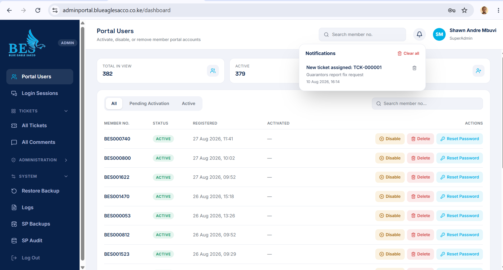
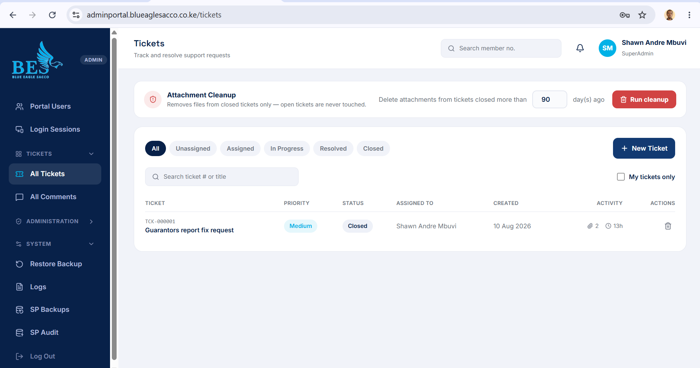
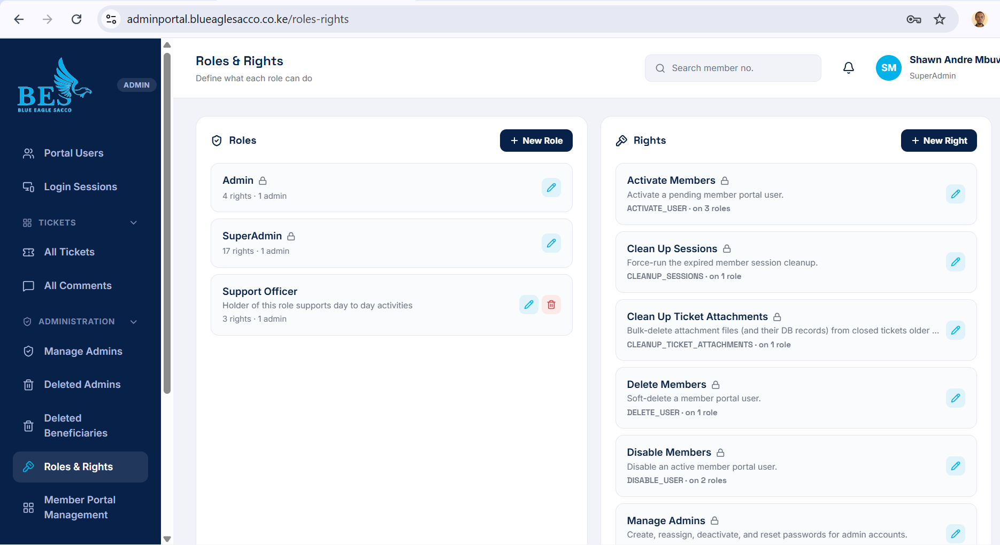
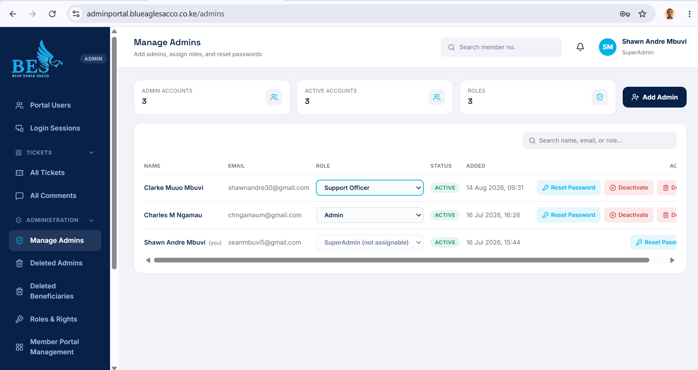
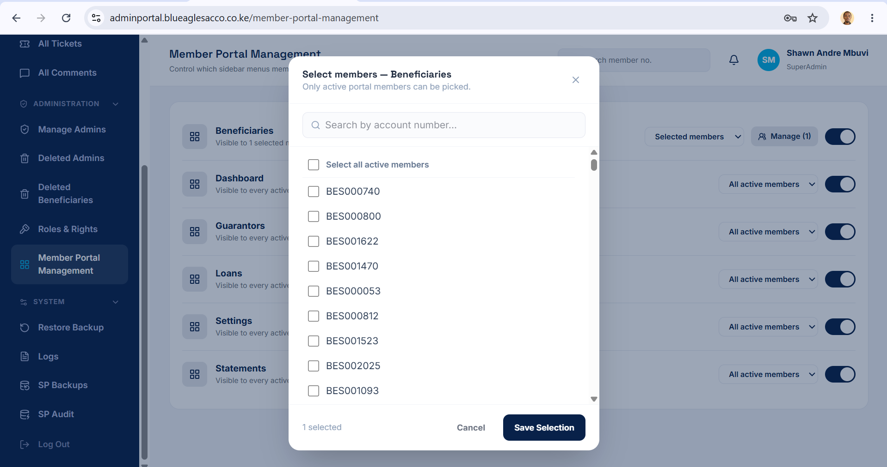
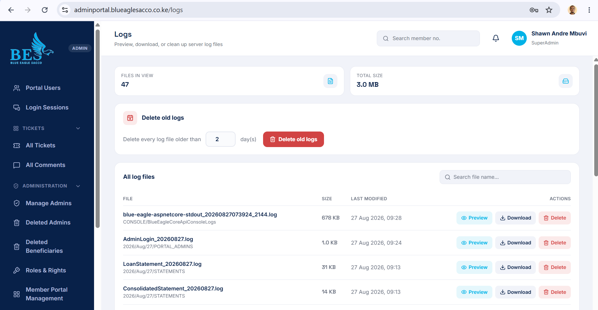
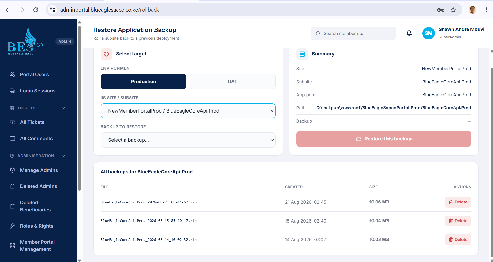
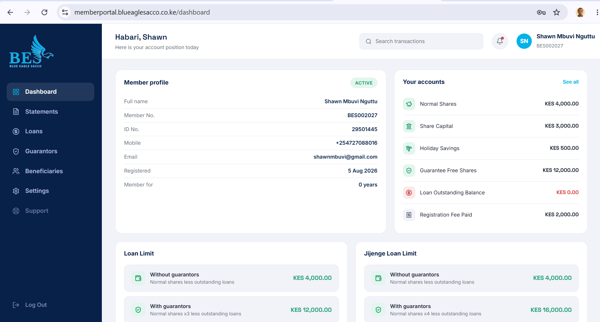
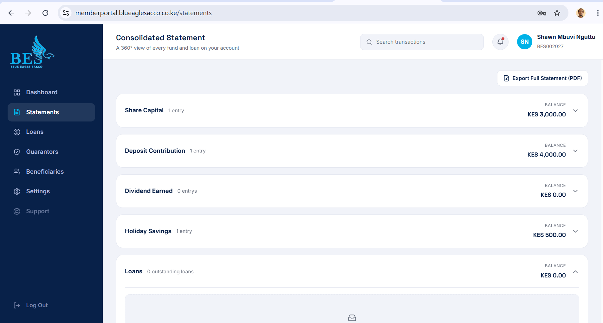

A full-stack platform for a savings and credit cooperative: an internal admin portal for staff operations and a member-facing portal, both backed by a shared .NET 8 API integrated directly with the SACCO's Microsoft Dynamics NAV / Business Central database.
Internal tool used by SACCO staff to manage members, tickets, access, and the deployment itself.

Activate, disable, or remove member portal accounts — 382 in view, 379 active.

Track and resolve member support requests, with scheduled attachment cleanup on closed tickets.

Define what each role can do — individual named rights assigned per role, not blanket permissions.

Add admins, assign roles, and reset passwords.

Control which sidebar sections are visible, per section, down to individual member accounts.

Preview, download, or clean up server log files — console logs, admin login logs, statement generation logs — with age-based cleanup.

Roll a Production or UAT subsite back to a previous deployment zip, straight from IIS site/subsite selection.
The member-facing side — account position, statements, and loan eligibility, calculated live from the core ledger.

Account position at a glance: shares, savings, loan balance, and loan limits with and without guarantors.

A 360° view of every fund and loan on the account, with full statement export to PDF.
Every admin action — activating a member, disabling a user, force-cleaning sessions, running
a ticket-attachment cleanup — maps to a named right (e.g. ACTIVATE_USER,
CLEANUP_SESSIONS) that's assigned to roles individually, so a role's
capabilities are always explicit rather than implied by its name.
Sidebar sections on the member portal (Beneficiaries, Dashboard, Guarantors, Loans, Settings, Statements) can each be scoped to all active members or a hand-picked list of account numbers — built on a two-table schema separating the visibility rule from the selected-member list.
Loan outstanding balance, normal shares, share capital, holiday savings, and guarantee free shares are all calculated directly from live transaction data in the Dynamics NAV database rather than a cached total — so what a member sees always matches the source ledger.
Staff can roll a Production or UAT subsite back to any previous deployment package directly from the admin portal — picking the IIS site, subsite, and dated backup zip — without needing direct server access.
Scheduled and on-demand cleanup for expired sessions, closed-ticket attachments, and aging log files — each with its own retention window — keeps the system tidy without manual server intervention.